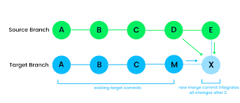

Los conflictos de fusión ocurren cuando Git no puede combinar automáticamente los cambios de dos ramas. Esto puede suceder si dos desarrolladores han editado la misma línea en un archivo o si uno ha eliminado un archivo que el otro ha modificado.
Para resolver un conflicto de fusión, sigue estos pasos:
git add <archivo>git commitRecuerda siempre hacer una copia de seguridad antes de resolver conflictos complejos.
⬅️ Volver al inicio